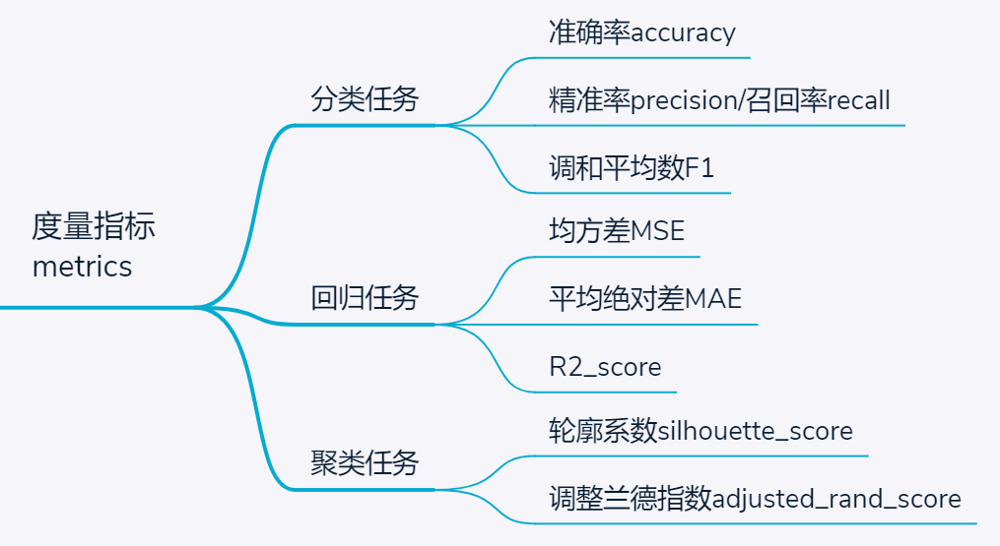
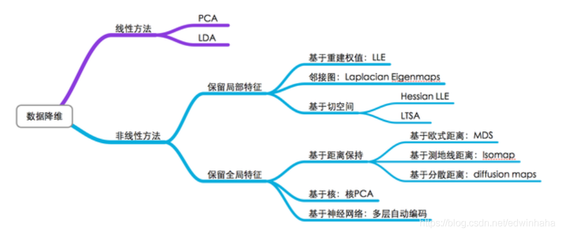
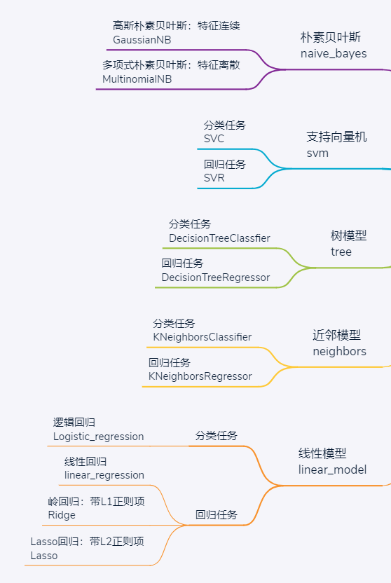
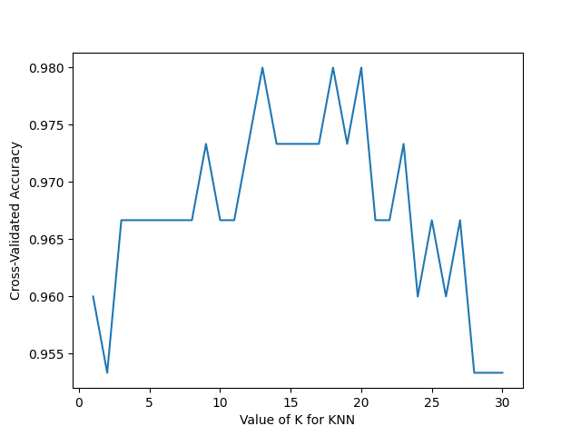

sklearn
1. 基本功能的概念解释
sklearn，全称 scikit-learn，是python中的机器学习库，建立在numpy、scipy、matplotlib等数据科学包的基础之上，涵盖了机器学习中的样例数据、数据预处理、模型验证、特征选择、分类、回归、聚类、降维等几乎所有环节，功能十分强大。本篇主要介绍sklearn常用的基础功能，更为详细的介绍和细节说明可以参考sklearn中文官方文档Introduction · sklearn 中文文档 (apachecn.org)
【！注意：使用sklearn包需要依赖于Numpy、SciPy、Matplotlib工具包】
下图为sklearn各个主要环节所构成的流程图，帮助使用者根据问题和数据特点选择合适的机器学习方法。

sklearn常用模块的概念解释：
-
datasets：sklearn为初学者提供了一些经典数据集，通过这些数据集可快速搭建机器学习任务、对比模型性能。数据集主要围绕分类和回归两类经典任务，对于不同需求，常用数据集简介如下：
-
load_breast_cancer：乳腺癌数据集，特征为连续数值变量，标签为0或1的二分类任务
-
load_iris：经典鸢尾花数据集，特征为连续数值变量，标签为0/1/2的三分类任务，且各类样本数量均衡，均为50个
-
load_wine：红酒数据集，与鸢尾花数据集特点类似，也是用于连续特征的3分类任务，不同之处在于各类样本数量轻微不均衡
-
load_digits：小型手写数字数据集（之所以称为小型，是因为还有大型的手写数字数据集mnist），包含0-9共10种标签，各类样本均衡，与前面3个数据集最大不同在于特征也是离散数值0—16之间，例如在进行多项式朴素贝叶斯模型、ID3树模型时，可用该数据集
-
load_boston：波士顿房价数据集，连续特征拟合房价，适用于回归任务
！模块导入from sklearn import datasets
-
数据预处理：sklearn中的各模型均有规范的数据输入输出格式，一般以np.array和pd.dataframe为标准格式，所以一些字符串的离散标签是不能直接用于模型训练的；同时为了加快模型训练速度和保证训练精度，往往还需对数据进行预处理。为此，sklearn提供了一些常用的数据预处理功能，常用的包括：
-
MinMaxScaler：归一化去量纲处理，适用于数据有明显的上下限，不会存在严重的异常值，例如考试得分0- 100之间的数据可首选归一化处理【处理后数据在0-1之间】
-
StandardScaler：标准化去量纲处理，适用于可能存在极大或极小的异常值，此时用MinMaxScaler时，可能因单个异常点而将其他数值变换的过于集中，而用标准正态分布去量纲则可有效避免这一问题【处理后均值为0，方差为1】
-
Binarizer：二值化处理，适用于将连续变量离散化
-
OneHotEncoder：独热编码，一种经典的编码方式，适用于离散标签间不存在明确的大小相对关系时。例如对于民族特征进行编码时，若将其编码为0-55的数值，则对于以距离作为度量的模型则意味着民族之间存在"大小"和"远近"关系，而用独热编码则将每个民族转换为一个由1个"1"和55个"0"组成的向量。弊端就是当分类标签过多时，容易带来维度灾难，而特征又过于稀疏
-
OrdinaryEncoder：数值编码，适用于某些标签编码为数值后不影响模型理解和训练时。例如，当民族为待分类标签时，则可将其简单编码为0-55之间的数字
！模块导入 eg：from sklearn.preprocessing import MinMaxScaler
-
特征选择：当数据预处理完成后，我们需要选择有意义的特征输入机器学习的算法和模型进行训练。通常来说，从两个方面考虑来选择特征：
-
特征是否发散：如果一个特征不发散，例如方差接近于0，也就是说样本在这个特征上基本上没有差异，这个特征对于样本的区分并没有什么用。
- 特征与目标的相关性：这点比较显见，与目标相关性高的特征，应当优选选择。除方差法外，本文介绍的其他方法均从相关性考虑。
以下是特征选择常用的几种方法
！模块导入 eg：from sklearn.feature_selection import VarianceThreshold
-
模型选择：机器学习中的重要环节，涉及到的操作包括数据集切分、参数调整和验证等。对应常用函数包括：
-
train_test_split：常用操作之一，切分数据集和测试集，可设置切分比例
-
cross_val_score：交叉验证，默认K=5折，相当于把数据集平均切分为5份，并逐一选择其中一份作为测试集、其余作为训练集进行训练及评分，最后返回K个评分
-
GridSearchCV：调参常用方法，通过字典类型设置一组候选参数，并制定度量标准，最后返回评分最高的参数
！模块导入 eg：from sklearn.model_selection import train_test_split
- 度量指标：筛选最佳模型和参数的指标，不同的度量标准会产生不一样的模型选择。

！模块导入 eg：from sklearn.metrics import mean_squared_error
- 降维：降维属于无监督学习的一种，当特征维度过多时可通过矩阵的QR分解实现在尽可能保留原有信息的情况下降低维度，一般用于图像数据预处理，且降维后的特征与原特征没有直接联系，使得模型训练不再具有可解释性。

！模块导入 eg：from sklearn.decomposition import PCA
-
聚类：聚类是一种典型的无监督学习任务，但也是实际应用中较为常见的需求。在不提供样本真实标签的情 况下，基于某些特征对样本进行物以类聚。根据聚类的原理，主要包括三种：
-
基于距离聚类，典型的就是K均值聚类，通过不断迭代和重新寻找最小距离，对所有样本划分为K个簇。
-
基于密度聚类，与距离聚类不同，基于密度聚类的思想是源于通过距离判断样本是否连通（需指定连通距离的阈值），从而完成样本划分。由于划分结果仅取决于连通距离的阈值，所以不可指定聚类的簇数。典型算法模型是DBSCAN
-
基于层次聚类，具体又可细分为自顶向下和自底向上，以自底向上层次聚类为例：首先将所有样本划分为一类，此时聚类簇数K=样本个数N，遍历寻找K个簇间最相近的两个簇并完成合并，此时还有K-1个簇，如此循环直至划分为指定的聚类簇数。当然，这里评价最相近的两个簇的标准又可细分为最小距离、最大距离和平均距离。
！模块导入 eg：from sklearn.cluster import KMeans
- 基本学习模型：为解决分类或回归的任务，有五个常用的经典模型如下：

2. 通用学习模式
SKlearn中机器学习模式的调用，有很强的统一性，相似度很高，学会一些典型的模型就可以以此类推学会使用其他的模型。
实例1：经典分类器
from sklearn import datasets
from sklearn.model_selection import train_test_split
from sklearn.neighbors import KNeighborsClassifier
from sklearn.preprocessing import StandardScaler
iris = datasets.load_iris()
iris_X = iris.data
iris_y = iris.target
#将数据按照7：3切割成训练集和测试集
X_train, X_test, y_train, y_test = train_test_split(iris_X, iris_y, test_size=0.3)
#对于特征标准化
std = StandardScaler()
X_train = std.fit_transform(X_train)
X_test = std.transform(X_test)
#选用k近邻算法模型，并且直接采用了默认的模型参数
knn = KNeighborsClassifier()
#模型拟合
knn.fit(X_train, y_train)
print(knn.predict(X_test))
print(y_test)
print("预测的准确率为： ", knn.score(X_test, y_test))
'''
[0 1 2 2 1 2 1 1 0 0 1 0 2 2 0 0 2 1 0 0 0 1 1 1 0 2 0 1 2 0 0 1 1 1 0 2 0
2 0 2 0 2 2 2 0]
[0 1 2 2 1 2 1 1 0 0 1 0 2 2 0 0 2 1 0 0 0 1 1 1 0 2 0 2 2 0 0 1 1 1 0 2 0
2 0 2 0 2 2 2 0]
预测的准确率为： 0.9777777777777777
'''
实例2：回归问题
from sklearn import datasets
from sklearn.linear_model import LinearRegression
loaded_data = datasets.load_boston()
data_X = loaded_data.data
data_y = loaded_data.target
#选用线性回归模型，模型参数默认
model = LinearRegression()
model.fit(data_X, data_y)
print(model.coef_)
print(model.intercept_)
#利用R^2 coefficient of determination进行模型打分
print("模型R^2: ", model.score(data_X, data_y))
'''
[-1.08011358e-01 4.64204584e-02 2.05586264e-02 2.68673382e+00
-1.77666112e+01 3.80986521e+00 6.92224640e-04 -1.47556685e+00
3.06049479e-01 -1.23345939e-02 -9.52747232e-01 9.31168327e-03
-5.24758378e-01]
36.45948838509042
模型R^2: 0.7406426641094095
'''
3. 交叉验证
交叉验证（cross-validation）对于我们选择正确的模型和模型的参数是非常有帮助的，由此我们能直观的看出不同模型或者参数对结构准确度的影响，而sklearn的model_selection模块中包含有许多交叉验证相关的函数功能。
实例3
from sklearn import datasets
from sklearn.model_selection import cross_val_score
from sklearn.neighbors import KNeighborsClassifier
iris = datasets.load_iris()
iris_X = iris.data
iris_y = iris.target
knn = KNeighborsClassifier()
#使用k折交叉验证，分成5折，用准确率对模型打分
scores = cross_val_score(knn, iris_X, iris_y, cv=5, scoring='accuracy')
print(scores.mean())
'''
0.9733333333333334
'''
进一步，若要根据交叉交叉验证的结果得到最佳的参数值：
import matplotlib.pyplot as plt
from sklearn import datasets
from sklearn.model_selection import cross_val_score
from sklearn.neighbors import KNeighborsClassifier
iris = datasets.load_iris()
iris_X = iris.data
iris_y = iris.target
k_range = range(1，31)
k_scores = []
for k in k_range:
#改变模型参数
knn = KNeighborsClassifier(n_neighbors=k)
scores = cross_val_score(knn, X, y, cv=10, scoring='accuracy')
k_scores.append(scores.mean())
#可视化数据
plt.plot(k_range, k_scores)
plt.xlabel('Value of K for KNN')
plt.ylabel('Cross-Validated Accuracy')
plt.show()

由此可知，k在12左右时较好，后来随着k的增大准确率开始下降则是因为过拟合的问题。
参考资料：sklearn库主要模块功能简介_梦想家博客-CSDN博客_sklearn库的功能
Sklearn 学习笔记4 decomposition(降维)模块_edwinhaha的博客-CSDN博客